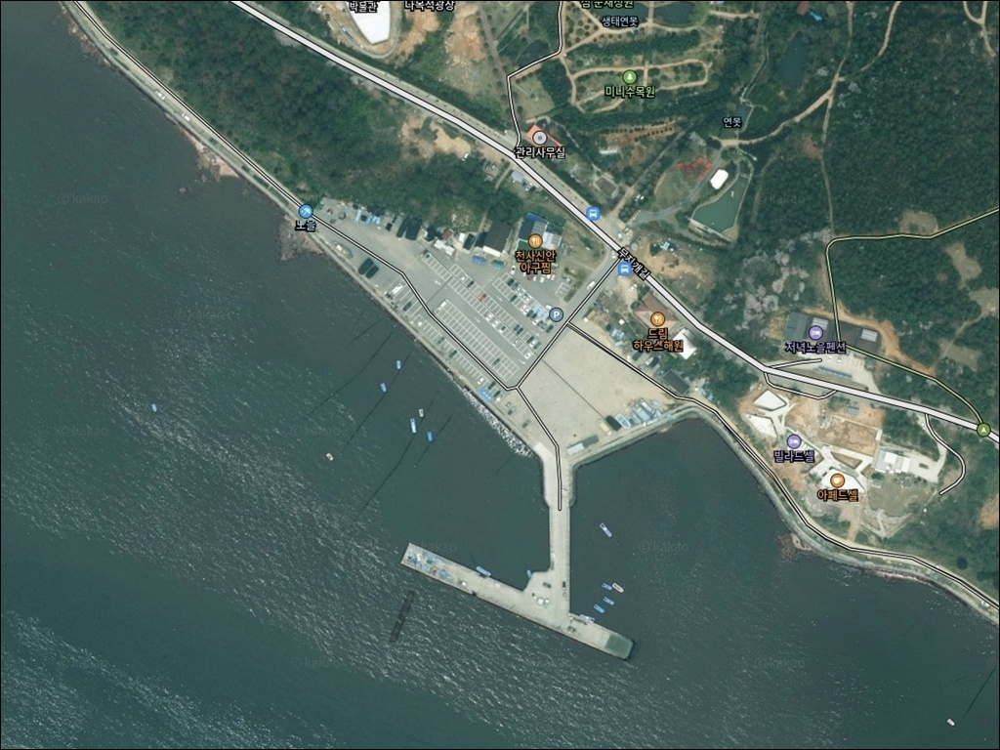
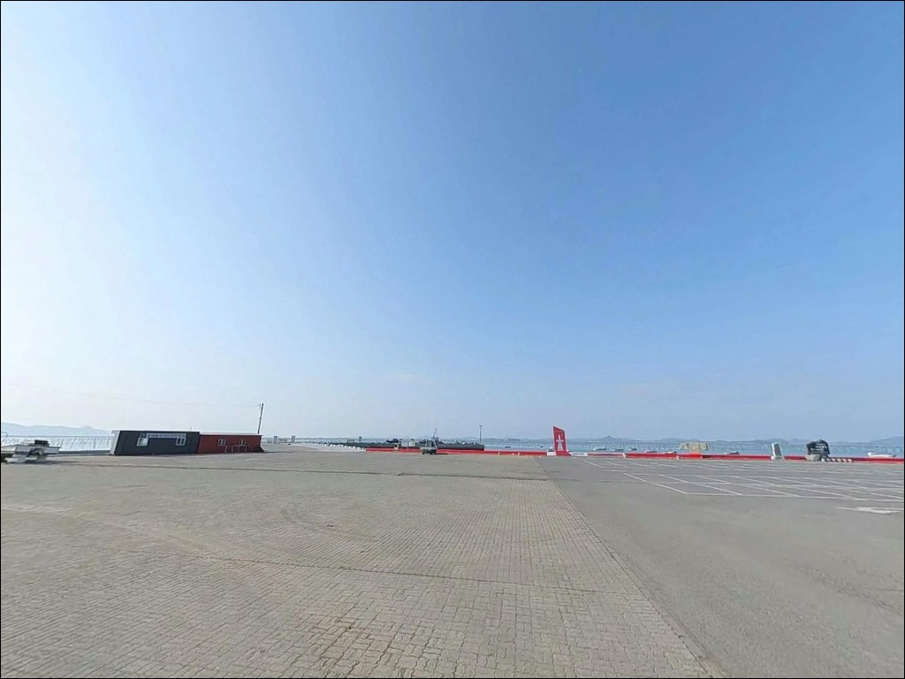
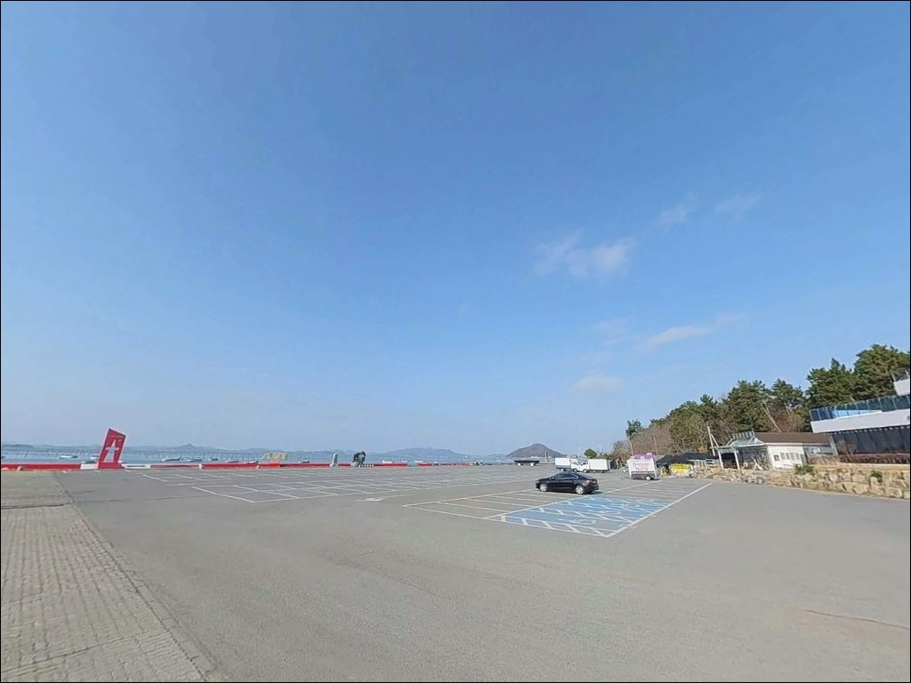
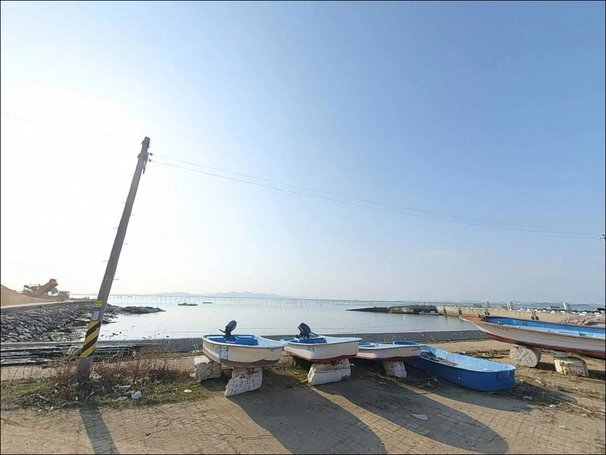
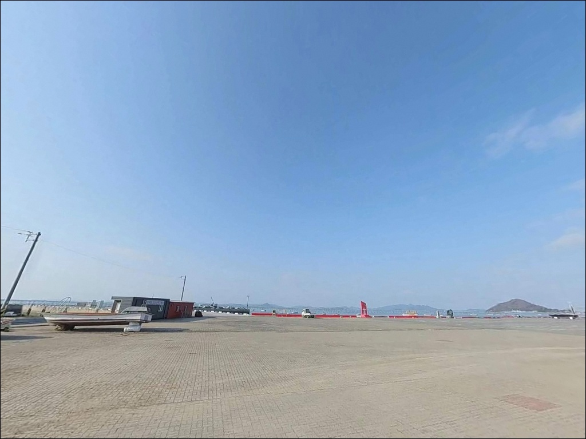
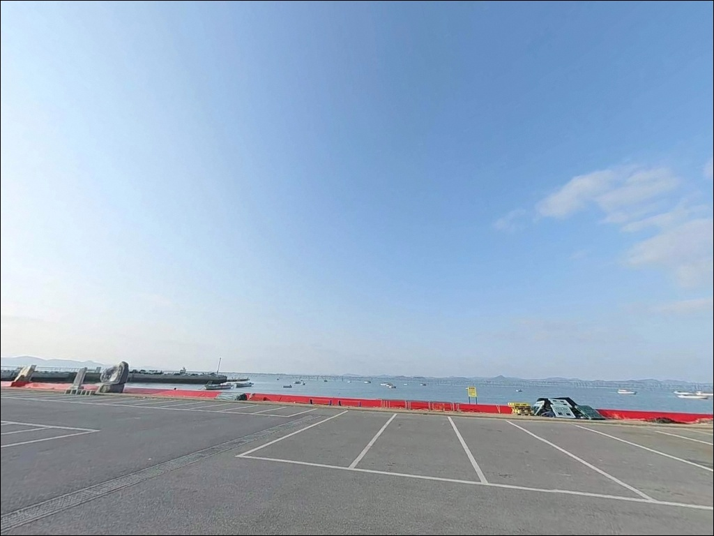
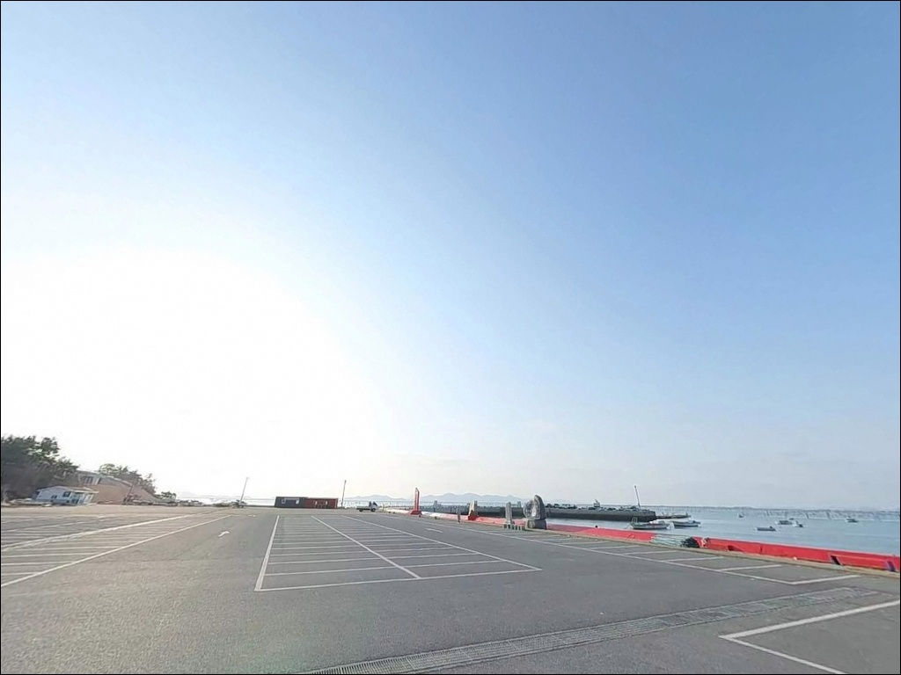
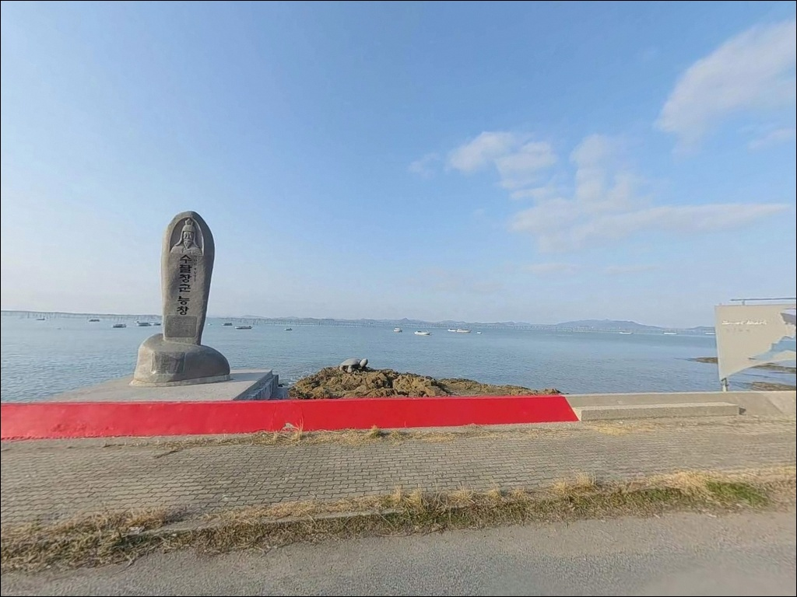
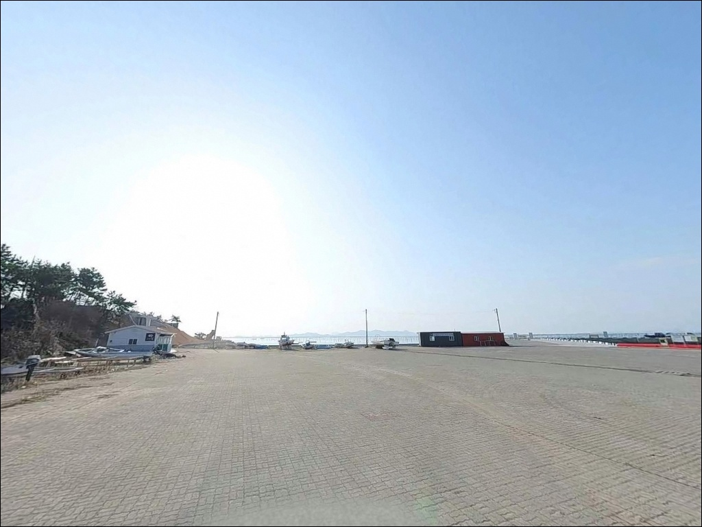

1004섬 분재정원, 전남 신안군 한적한 분위기 속 차박, 낚시를 함께 하기 좋은 곳
이 페이지에는 광고(제휴 링크 포함)가 있으며, 광고 링크를 통해 구매하면 운영자가 판매 수익 또는 수수료를 받을 수 있습니다. 포인트 사진: 카카오맵 스카이뷰·로드뷰. 이 페이지의 지도·사진 이미지는 카카오맵의 실제 서비스 이미지와 다를 수 있습니다.


포인트 안내
1004섬 분재정원
전남 신안군 압해읍 송공리 58-38
서해 갯벌 포인트에서 물때 확인 없이 현장에 도착하면
선착장 주변이 드러난 갯벌로 바뀌어 있습니다.
간조 타이밍에는 조류가 멈추고 수심이 크게 줄어들어
어떤 채비를 써도 낚시 자체가 성립하지 않는
시간대가 됩니다.
압해도 서단 송공리 일대는
다도해 물골과 갯벌이 맞닿은
전형적인 서해 내만형 해안입니다.
1004섬 분재정원을 기점으로
송공항 방면 해안선까지 이어지는 구간이
이 권역 낚시의 실질 포인트 범위입니다.
이 글은 압해도 송공리 일대의
지형 여건, 물때 판단 기준,
낚시 방식 적합성, 차박 가능 공간에 집중합니다.
조황 단정이나 특정 어종 보장은
이 글의 범위에 포함되지 않습니다.

1. 진입 동선과 포인트 접근성
압해도 진입은 천사대교(압해대교)를 통해
목포 방면에서 차량으로 접근합니다.
서해안고속도로 목포 IC에서 압해읍사무소를 거쳐
송공리 방면으로 이동하는 동선이 기본입니다.
진입로 전 구간이 포장도로로 이어져 있어
대형 차량도 접근에 어려움이 없는 수준입니다.
1004섬 분재정원에는 공영주차장이 마련되어 있어
회차와 주차 모두 어렵지 않습니다.
낚시 자리로 이동하려면 이곳을 거점으로 삼고
송공항 방면으로 차량을 이동하거나
해안선을 따라 접근하는 방식이 일반적입니다.
송공항은 자은도·암태도·팔금도 방면
여객선이 운항하는 항구입니다.
접안 구역과 어선 하적 공간은
낚시 자리와 명확히 구분해 사용해야 하며,
선박 이동 동선을 피한 자리 선정이 먼저입니다.

2. 차박 환경과 야간 체류 여건
차박이란 차량을 숙박 공간으로 활용하며
현장에서 하룻밤 머무는 여행 방식입니다.
송공항 주변은 여객선이 운항하는 항구 특성상
낮 시간대에는 이동 차량과 여행객이 있습니다.
야간이 되면 차량 통행이 줄어들고
조용한 환경으로 바뀌는 편이며,
항구 뒤편으로 횟집과 소규모 상권이 자리해
완전한 오지 환경은 아닌 수준입니다.
항구 내 공터를 차박 거점으로 쓰려면
어민 작업 시간대와
여객선 운항 동선을 먼저 파악해야 합니다.
접안 구역과 하적 공간을 피해
외곽 공터에 자리를 잡는 방식이
마찰 없이 체류할 수 있는 기본 조건입니다.
서해 방향으로 열린 구조라
바람 영향을 받는 날이 있습니다.
가로등은 항구 주변 일부 구간에만 있는 편이라
야간 낚시를 겸할 경우 헤드랜턴과
개인 조명 장비는 반드시 챙겨야 합니다.


3. 주변 편의시설 및 인프라 현황
송공항에서 약 800m 거리에
이마트24 신안송공항점이 위치합니다.
기본 식료품, 음료, 간식류는
이곳에서 충당이 가능합니다.
항구 주변에는 횟집과 식당이 자리하며,
남도음식거리로 지정된 권역이라
식사 해결도 어렵지 않은 편입니다.
분재정원 공영주차장에는 화장실이 있습니다.
다만 정원 운영 시간 외 사용 가능 여부는
현장에서 직접 확인이 필요합니다.
압해읍 방면 3km권 이내에
주유소와 소형 마트가 자리합니다.
낚시 용품이나 추가 채비가 필요하다면
압해읍 시내(10km권)나
목포 시내 방향으로 이동하는 것이
가장 확실한 보충 동선입니다.
출발 전 필요한 채비는 미리 갖추고 오는 것이
현장 이동 낭비를 줄이는 방법입니다.

4. 물때 확인 없이 가면 낚시 자리 자체가 없어집니다
압해도 일대는 서해 내만형 지형으로
간조·만조 수위 차이가 큰 편입니다.
바다타임에서 압해도 또는 목포 기준 물때를 확인하고
출발 시각을 맞추는 것이
이 권역 출조의 기본 전제입니다.
만조 전후 2시간이 낚시 가능 수심이
가장 안정적으로 확보되는 타이밍입니다.
서해 갯벌 지형 특성상 간조 시에는
선착장 주변이 갯벌로 드러나는 경우가 있습니다.
이 타이밍에 도착하면 낚시 자리 자체가 없어지므로
도착 시각과 물때를 역산해
출발 일정을 조율하는 것이 맞습니다.
기상 변화가 빠른 서해 섬 지역 특성상
출발 당일 아침 해상 예보를 다시 확인하는 것이 좋습니다.
어선 조업 구역에는 어망과 어구가 있을 수 있으니
어구 위치를 먼저 파악한 뒤
자리를 잡는 것이 기본 매너입니다.

5. 지형 기반 낚시 여건 분석
압해도 송공리 일대는 다도해 내만형 지형으로
인근 섬들과 수로 사이에서 조류가 형성됩니다.
송공항 선착장 끝단과 수로 입구 쪽은
내만 중에서도 수심이 상대적으로 있는 구간으로,
만조 전후 조류가 살아날 때
어류의 이동 길목 역할을 하는 지형입니다.
서해 갯벌 포인트는 간조 타이밍에 수심이 크게 줄어들어
물때 확인이 출조 성패를 결정합니다.
해안선을 따라 석축과 선착장 구조물이 자리해
바닥은 모래와 뻘이 섞인 혼합 지형입니다.
채비의 밑걸림은
선착장 외곽 쪽보다 석축 경계 부근에서
상대적으로 많아지는 편이라
여분 채비를 넉넉히 준비하는 것이 좋습니다.
압해도 일대는 복룡리 앞바다(나룻갓) 구간을 비롯해
농어·숭어가 물길을 따라 이동하는
지형 조건이 섬 전체에 분포하는 편입니다.
송공리 권역도 이와 유사한 지형 패턴을 가지고 있어
시즌에 따라 같은 어종의 유입을
기대해 볼 수 있는 구조입니다.
최신 조황은 가기 전에 꼭 검색해 보시기 바랍니다.


6. 포인트에 어울리는 낚시 스타일
원투낚시가 이 지형 조건에 가장 잘 맞는 방식입니다.
선착장 끝단에서 수로 방향으로 채비를 던진 뒤
바닥을 천천히 탐색하는 방식으로 접근합니다.
갯지렁이 미끼로 붕장어·도다리 계열을
기대해 볼 수 있는 지형 구조이며,
물때가 살아 있는 만조 전후가
원투 채비 효율이 가장 올라가는 타이밍입니다.
숭어 루어낚시와 찌낚시도 어울리는 스타일입니다.
압해도 일대는 숭어가 물길을 따라
이동하는 지형 특성이 있어,
항구 내만 쪽에서 릴찌 또는 웜 지그헤드 채비로
천천히 흘려 보내는 방식이
잔잔한 내만 구조에 잘 맞습니다.
농어 루어도 시도해 볼 만합니다.
선착장 수로 입구 쪽은 만조 전후
조류가 생기는 타이밍에 미노우·바이브레이션 계열로
탐색해 볼 수 있는 지형 조건입니다.
시즌에 따라서는 갑오징어·주꾸미를 노리는
에깅 채비도 송공리 일대 해안에서
시도해 볼 만한 방식으로 꼽힙니다.

7. 대안 포인트와 플랜 B 동선
송공항 여건이 기대에 못 미치거나
주차 공간 확보가 어려울 때는
압해도 복룡리 앞바다(나룻갓)가
첫 번째 대안입니다.
농어·숭어가 지나가는 길목으로 알려진 이곳은
송공리와 같은 압해도 내 생활권이라
이동 거리가 길지 않습니다.
동일 섬 내 다른 선착장 포인트도
탐색 대상이 됩니다.
압해도는 해안선 전체에 크고 작은
선착장과 석축 구조물이 분포해 있어
출조 전 위성지도로 인접 포인트 두세 곳을
미리 파악해 두는 방식이
이 권역에서 효율적인 플랜 B 구성입니다.
차박 거점을 바꾸고 싶을 때는
압해도 천사대교 인근 공원 방면이
주차 여건과 야간 환경이
상대적으로 나은 대안이 됩니다.
출조 전에 "압해도 낚시 조황" 또는
"송공항 조황"으로 검색해
현장 상황을 먼저 파악하는 것이 좋습니다.

물때 한 번 맞추면
조용히 낚싯대를 드리울 수 있는 곳입니다
원투낚시나 숭어 루어를 주로 즐기는 낚시인이라면
서해 내만형 지형인 송공리 권역이
낚시 스타일과 잘 맞는 구조입니다.
접근이 편하고 인근 편의시설도 갖춰진 편이라
장비를 간소하게 꾸려 당일 출조로 다녀오기에
부담이 없는 포인트입니다.
다만 물때 계산 없이 간조 타이밍에 도착하면
갯벌이 드러난 채 낚시 자리가 사라지는
상황을 맞닥뜨릴 수 있습니다.
바다타임 확인, 어민 동선 파악, 채비 자급 준비,
이 세 가지를 갖추고 간다면
분재정원 관람과 낚시를 함께 엮은
알차고 조용한 압해도 출조가 됩니다.
차박으로 하룻밤 머물 계획이라면
여객선 운항 동선과 어민 작업 시간을
먼저 파악하고 자리를 잡는 것이 전제이며,
물때 맞는 저녁 조류에 낚싯대를 드리운 뒤
다도해 조망을 바라보며 하루를 마무리하는
차박 여행이 될 수 있는 곳입니다.